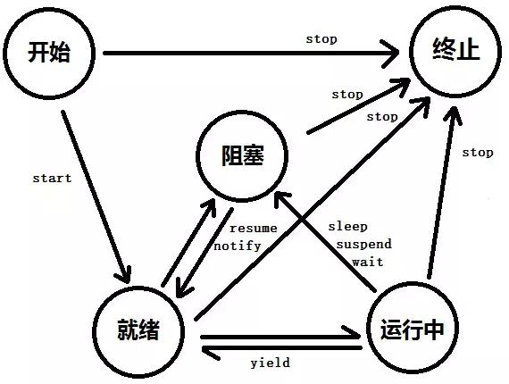

进程
狭义定义：进程就是一段程序的执行过程(一个程序)。
广义定义：进程是一个具有一定独立功能的程序关于某个数据集合的一次运行活动。它是操作系统动态执行的基本单元，在传统的操作系统中，进程既是基本的分配单元，也是基本的执行单元。
进程是一个实体。每一个进程都有它自己的地址空间，一般情况下，包括文本区域（text region）、数据区域（data region）和堆栈（stack region）。文本区域存储处理器执行的代码；数据区域存储变量和进程执行期间使用的动态分配的内存；堆栈区域存储着活动过程调用的指令和本地变量
进程是一个“执行中的程序”。程序是一个没有生命的实体，只有处理器赋予程序生命时，它才能成为一个活动的实体，我们称其为进程。
进程状态： 进程有三个状态:就绪、运行和阻塞。
就绪状态:是获取了除cpu外的所有资源，只要处理器分配资源就可以马上执行。 就绪状态:有排队序列什么的，排队原则不再赘述。 运行态:是获得了处理器分配的资源，程序开始执行。 阻塞态:当程序条件不够时候，需要等待条件满足时候才能执行，如等待i/o操作时候，此刻的状态就叫阻塞态。状态图

线程
通常在一个进程中可以包含若干个线程，当然一个进程中至少有一个线程，不然没有存在的意义。线程可以利用进程所拥有的资源，在引入线程的操作系统中，通常都是把进程作为分配资源的基本单位，而把线程作为独立运行和独立调度的基本单位，由于线程比进程更小，基本上不拥有系统资源，故对它的调度所付出的开销就会小得多，能更高效的提高系统多个程序间并发执行的程度。
Thread.sleep 意味着线程主动告诉操作系统自己要休息 n 毫秒。
Thread.sleep(0) 进入就绪状态
如果n=0时，意味着当前线程的时间片没有用完，主动放弃自己剩下的时间片，进入就绪状态。这种情况下只能调度优先级相等或更高的线程，意味着优先级低的线程很难获得时间片，很可能永远都调用不到。当没有符合条件的线程，会一直占用 CPU 时间片，造成 CPU 100%占用率。
如果n>0，会强制当前线程放弃剩余时间片，并休息n秒（因为不是实时操作系统，时间无法保证精确，一般可能会滞后几毫秒或一个时间片），进入阻塞状态。这种情况下所有其它就绪状态的线程都有机会竞争时间片，而不用在乎优先级。无论有没有符合的线程，都会放弃 CPU 时间，因此 CPU 占用率较低。
进程与线程的区别
进程和线程的主要差别在于它们是不同的操作系统资源管理方式。进程有独立的地址空间，一个进程崩溃后，在保护模式下不会对其它进程产生影响，而线程只是一个进程中的不同执行路径。线程有自己的堆栈和局部变量，但线程之间没有单独的地址空间，一个线程死掉就等于整个进程死掉，所以多进程的程序要比多线程的程序健壮，但在进程切换时，耗费资源较大，效率要差一些。但对于一些要求同时进行并且又要共享某些变量的并发操作，只能用线程，不能用进程
简而言之,一个程序至少有一个进程,一个进程至少有一个线程.
线程的划分尺度小于进程，使得多线程程序的并发性高.
进程在执行过程中拥有独立的内存单元，而多个线程共享内存，从而极大地提高了程序的运行效率.
程在执行过程中与进程还是有区别的。每个独立的线程有一个程序运行的入口、顺序执行序列和程序的出口。但是线程不能够独立执行，必须依存在应用程序中，由应用程序提供多个线程执行控制